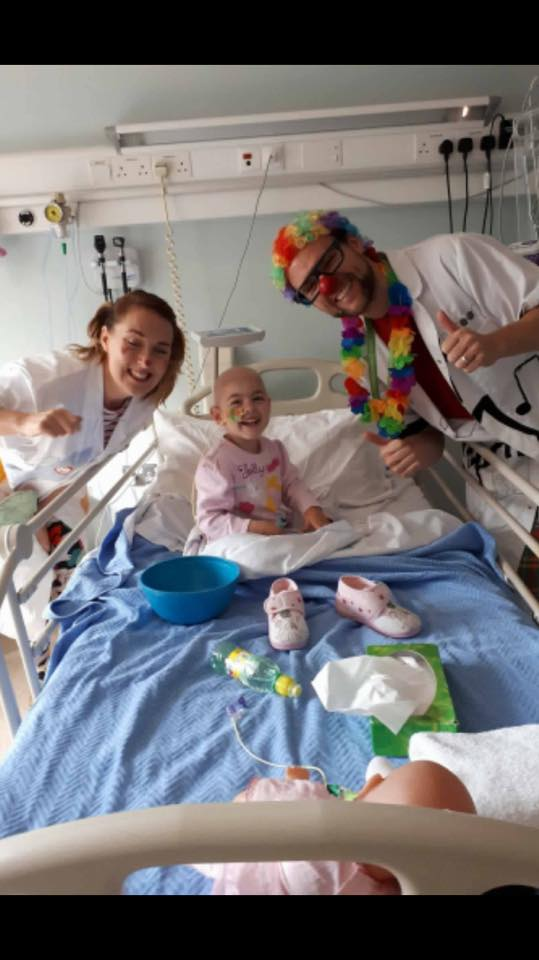

Testimonials
So wonderful to see you today in HOOPS clinic... hope you got your ‘squeaky shoe’ sorted.... you are absolutely wonderful
Happy Christmas to you all xx Margaret
Thanks for brightening our day when you met Andrew ! Vivienne xx
Hi guys ye met this morning with Ben. You are an amazing group of people whom keep us going during our time in johns ward. We never forgot your kindness and to meet Ye again today in hoops made our day. Thank you for all your kindness...Mandy xxxx
Just wanted to say thanks for coming to see little Mimi today in CHC. She was a bit tired before her nap but still enjoyed the butterfly, pink hair and red nose. Was singing the frog song after the doctors left:) Victoria
Hi doctor's just want to thank you all so much for calling into to see the children of St. John's.
Grace is back in St. John's with relapse and had a tough September but it was great to see her smile and laugh when Aoifes clown doctors called. She a big fan of all of you so from all the Lowe's a big Thank You & Keep up the fantastic work.
P.S.. it's the children smiling and laughing that gets the parents through the tough days.
